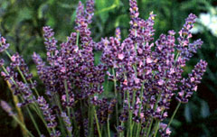
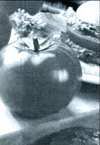
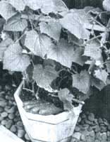
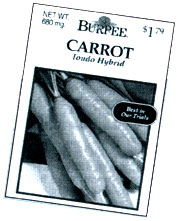

Garden and Yard
MOTHER brings you the best seeds of the new growing season.
Time proven garden seed varieties such as Provider bush beans, Green Mountain potatoes, and Cut-&-Come Again zinnias predominate in our gardens. But we always leave a few rows to experiment with, like the year purple vegetables were all the rage and we grew purple potatoes, purple bush beans, purple-ker neled corn, and purple-head broccoli. They go along with the eggplant, blue kale, and those Arancuna chicken eggs that were supposed to be low-cholesterol and blue shelled but turned out to be few, tiny, and olive drab.
This year, we're trying traditional Golden Bantam sweet corn again and will strive to get it picked before it turns too chewy for anything but corn relish. We usually transplant especially vigorous volunteer tomatoes or squash plants from the compost bins to the trial garden, and we always try a few of the new varieties that look so dew-bedecked and mouth watering in the seed catalogs.
Of course, not every experiment succeeds in our ornery Yankee climate. Only Royalty "Purple-Pod" Bush Beans remain from the "purple" experiment, and most volunteer plants prove to be all vine and no fruit. But only by experimenting did we discover fast-growing top-quality Green Comet broccoli and the great tomato Celebrity that have become staples of our summer's bounty. And we only heard of them because they were recommended in years past by All-America Selections (AAS).
All-America Selections was founded in 1933 by North American seed growers to establish a degree of uniformity in home garden seed identification and promotion-voluntary "truth in labeling" 60 years before other industries had it forced on them. Each year, AAS enlists a panel of unpaid, volunteer experts-academics, horticulturists, gardeners, and seed growers from 50-plus locations across the United States and Canada-to try the new garden vegetables and new cut- and bedding-flower varieties submitted by member organizations.
In blind trials, where identity of seed developers is concealed, each panelist germinates upwards of 1,000 trial plants, grows them to maturity, then evaluates each on the basis of growth habit, disease resistance, yield, and appearance-and, for eating quality in vegetables. All-America Selections collects and tabulates the findings and superior varieties are determined. Periodically, medals are awarded for truly exceptional quality or originality: the last gold-medal winner was fast-flowering coreopsis "Early Sunrise" in 1989. Winners are used to promote the seed industry. Of course, not all the selected varieties become popular, but those that do will sport the "AAS Winner" or "AAS Gold Medal Winner" designation in their catalog descriptions and you will see AAS on seed packets.
Time was, we home gardeners couldn't avoid Sunday-supplement and magazine articles on the new All-America Selections each late winter/early spring. But these days the garden press seems to be neglecting AAS in favor of their own panels of experts ...following what one of our seasoned contributors calls "The Emma Mudd School of Gardening"; the idea being that the personal experience of a few amateur gardeners is more valid than the informed judgment of USDA and aggie school professionals. A shame to waste all that brainpower whose sole purpose is to make things easier for the rest of us.
Because we can't help but feel that the recommendations of a score of horticulture pros is at least as credible as the opinions of Emma Mudd, here are the AAS for the 1994 growing season. Each new seed variety-especially if a hand-pollinated hybrid-has taken its developer many years and a considerable investment to produce. Prices will be higher than for older varieties but should be uniform between sellers unless you patronize the growing number of seed folks selling "minipacks" containing a few seeds at a big price break.
But, as the packet will tell you, all the seed is freshly packed for this year, yearning to sprout and awaiting only your green thumb. So, go down to the seed displays at your local nursery or get out your mail-order catalogs and order some of the All-America Selections. If a new variety performs exceptionally well for you in speed and reliability of germination, hardiness, and disease resistance, drought or wet tolerance, or especially in ornamental or eating quality-let MOTHER know? If enough readers feel they've discovered another Green Comet or Celebrity, we'll pass the word.
1994 AAS Flower Award Winner
Lavender "Lady" English Lavender
This is the old-fashioned aromatic herb with sweet-scented, lavender flowers that your grandmother dried and sewed into little sachet pillows to keep in her underwear drawer. In grandmother's day, it was a low perennial that was "blind"-nonflowering the first year after planting from seed. It is not frost hardy either, so could be grown as a perennial only to zone five.
"Lady" is the first lavender that can be grown as an annual. It will bloom the first year-if planted inside four to six months before setting out. "Lady" grows to two feet in height and is covered with bloom.
1994 AAS Vegetable Award Winner
Tomato F1 "Big Beef"
A greatly improved beefsteak-type giant tomato. The original "one slice fills a sandwich" tomato was pink, grainy, and bland. "Big Beef" was cited by judges as "meaty, not mealy," having "firm flesh with a sweet flavor" and a "good sugar-to-acid ratio." Fruits as early as 73 days from setting out-extremely early for such large fruit. Multiple tolerance to disease, which means less stress, which means wider adaptation and greater production. A rank-growing indeterminate plant, so should be staked, pruned, or grown in a wire cage. Will flower all summer and leave plenty of green fruit at frost. Don't grow for canning, as it is liable to be too subacid in most soils.
1994 AAS Vegetable Award Winner
Cucumber F1 "Fanfare"
Here is a cucumber that produces high-quality, 8 to 9 inch, smooth-skinned, slicing-type fruit on plants that only need two feet of space. "Monoecious," with both male and female flowers on each plant, so no separate pollinator plants are needed. Good for patio containers as well as small-garden culture. High yields of less-bitter fruit, and experiences less stress due to its multiple disease tolerance. Begins producing just 63 days from planting seeds into warm soil.
1993
Pumpkin "Baby Bear"
A 1 1/2- to 2 1/2-pound pumpkin in a perfect jack-o'-lantern shape. Both the flesh and hulless seeds make good eating. Stores well, too.
T omato F1 "Husky Gold"
How about a tomato of pure gold? Semi-determinate; if grown unpruned in a cage, produces 7- to 8-ounce fruit all summer. Produces after 70 days.
1992
Carrot "Thumbelina"
A good-quality miniature carrot. Two inches long and good for container or garden.
Dill "Fernleaf"
A dill that only reaches 18 to 24 inches in height, and won't "lodge" or fall over when ripe with seed heads. All of the plant but the root can be used in cooking and making pickles.
1991
Pole Bean "Kentucky Blue"
Not a hybrid, but a genetically engineered combination of old favorites Blue Lake and Kentucky Wonder. Grow 7foot-tall vines on long poles for high production of a fine-flavored green bean.
Squash F1 "Tivoli"
A vegetable squash from a bush rather than a rangy vine that wants to take over the garden.
Watermelon F1 "Golden Crown"
Gold rind, red flesh in fruit of "icebox size" of 6 to 8 pounds, about two months from seed.
1990
Bean "Derby"
A bush bean maturing in only 57 days. Higher yield, better quality, more tender.
Pepper F1 "Super Cayenne"
If you like hot peppers, you'll love this decorative, 24-inch-tall plant with improved yield.
Squash F1 "Cream of the Crop"
A bush acorn plant producing creamy white, 2-pound to 3-pound, hard-shelled, "winter-keeping" type fruit on bushy plants.
Squash F1 "Sun Drops"
An oval, golden-yellow summer squash harvestable from "baby" sized to 4 inches in diameter.
Like all technical specialties, seed growers/sellers have a shorthand to convey the most information in the least space. Aside from a paragraph or two describing the variety and its growth habit may be cryptic codes and terms that may leave you in the dark. The following is a seed-packet lingo legend:
Stock Numbers come out of the order-taker's computer and are crucial; get one wrong on mail-order form and you can end up with a packet of Heliocanthus when you expected Head Lettuce.
Varietal Names, especially the older ones, can vary among suppliers and their section of the country. The low evergreen ground cover with small blue flowers called periwinkle in one locale is Vinca Minor or "vinca" in another Ground-Myrtle or "myrtle" elsewhere.
With new varieties, it's best to buy from the firm that tells you on the packet or in catalog copy that they developed or import the seeds. They will use the correct name and reserve the best seed if there is a quality choice.
Hybrid plants (Hb) F1 or F2 are bred from two or more different parent stocks, with traits that improve on the best characteristics of both strains, but they are unable to pass them on-like a mule can't heir its kick.
Don't save hybrid seed and plant it; you'll get an atavistic throwback with the worst characteristics of some half-wild great-grandparent. Open-pollinated (OP) seed will grow true to type. Reserve seed Reselected variety that does best in your soil and climate. Genetics of sweet corn is often indicated by an (S), which means it is a glucose-containing, eating variety rather than field corn. (Se) is an extra-sweet hybrid; (Sh2) is a super-sweet hybrid that must self-pollinate ...must be planted upwind of and some distance from other corn varieties to develop the sugary trait.
Maturity means days to harvest not to fully ripe, seed stage maturity, except for tomatoes and peppers that you leave on the vine long enough to turn red. It indicates time to harvest from average day of planting seed (or transplanting indoor-started seedlings) into what the seedsman sees to be a typical home garden. Some seed is simply rated as early/midseason/late. But look hard at the maturities; often "Early" varies only by a day or two from "midseason" or "main-crop" The figures are approximations at best, so use them for comparison only; an 82-day tomato has already spent weeks in the indoor flat, and it may never ripen at all if you live in a short season area and plant it out late.
Disease & Pest Resistance shows what degree of tolerance to common pests or diseases have been bred into the seed. Verticillium and Fusariurn live inmost garden soil; so do nematodes of many kinds. Yellows and nematodes are worst in southern soil. Bred-in resistance is the best preventative.
AM means a past All-America Selection. VFN is commonly run together; it means a resistance to: Verticillium wilt of tomatoes and eggplant. Fusarium fungus of tomatoes and others. Nematodes, microscopic soil worms that bother especially tomatoes, peppers, and eggplant. T or TMV indicates resistance to tobacco mosaic virus that affects tomatoes and peppers. Y means a resistance to Yellows, a common fungus affecting members of the cabbage family. A indicates resistance to anthracnose in beans and cucumbers or altenaria stem fungus in tomatoes. BMV means resistance to bean mosaic virus. CMV means resistance to cucumber mosaic virus. MTO is seed free of lettuce mosaic virus.
Proprietary Codes in a variety of configurations indicate a variety's special suitability for new gardeners, for especially hot and dry or cool and wet climates, or for other growing situations.
|
 |
 |
 |
|
 |
|
|